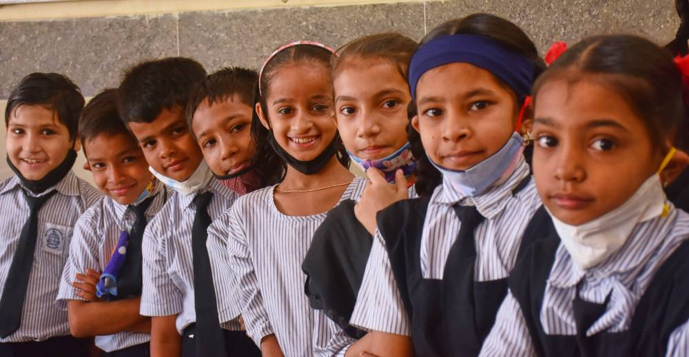

Breakfast is often called ‘the most important meal of the day, and for good reason. As the name suggests, breakfast breaks the overnight fasting period. It replenishes the supply of glucose to boost energy levels and alertness, while also providing other essential nutrients required for good health.
Bal Shiksha Ahara is a free breakfast Programme primarily concentrated on providing hot and nutritious breakfast to the underprivileged children of Municipal Schools in Mumbai across diverse mediums like English, Hindi, Marathi, Gujarati and Urdu.
Providing access to nutritious food which will go beyond nutrition, School breakfast Programme will aid in the enrichment of the underprivileged children fostering optimal growth and development.

---SUPPORT BAL SHIKSHA---
Empty stomachs crave for food and not knowledge.
This basic need of going to study with a full stomach is a dream for the children studying in Government schools.
We, at Akshaya Chaitanya, are striving to make this dream a reality by serving nutritious and healthy breakfast meals to the children so that they can focus on acquiring knowledge which will help them open up many possibilities to lead their respective lives
